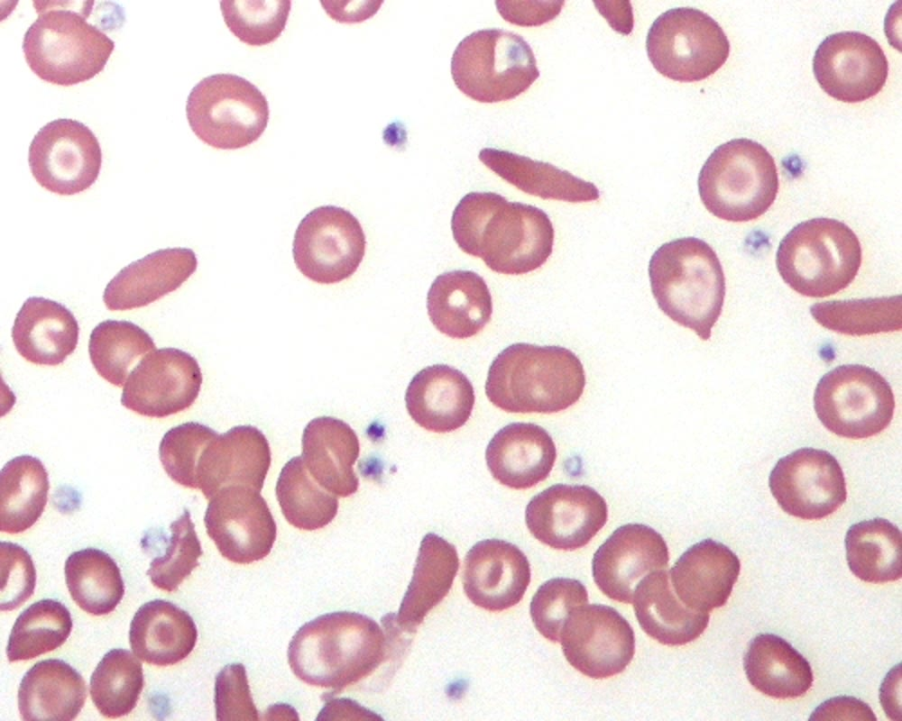

基因突变和基因重组
本期导读
镰状细胞贫血 · 细胞癌变 · 两种基因重组

视频原话 · 导读3 句
- 同学们好！这节课梳理人教版必修二第五章第一节——基因突变和基因重组。7.8s
- 高考常考碱基变化对蛋白质的影响、细胞癌变、基因突变的特点和两种基因重组。8.0s
- 我们按八个考点梳理，每个考点都讲清楚怎么考、怎么做。5.5s
镰状细胞贫血的病因01#
- 模板链：CTC → CAC碱基对替换（T—A → A—T）
- 转录 →mRNA：GAG → GUG
- 谷氨酸 → 缬氨酸直接原因
- 翻译 →血红蛋白异常 → 红细胞镰刀状
考法
直接原因：血红蛋白中一个氨基酸被替换；根本原因：基因中一个碱基对被替换；可用显微镜观察红细胞形态诊断
视频原话4 句
- 考点一，镰状细胞贫血的病因。患者的红细胞呈镰刀状，容易破裂，使人患溶血性贫血。9.0s
- 直接原因：血红蛋白中一个谷氨酸被缬氨酸替换。5.2s
- 根本原因：血红蛋白基因中一个碱基对被替换，模板链上的 CTC 变成了 CAC，mRNA 上的 GAG 变成了 GUG。11.2s
- 考法：分清直接原因是蛋白质改变，根本原因是基因改变；可以用显微镜观察红细胞形态来诊断。9.6s
基因突变的概念02#
DNA 分子中发生碱基的替换、增添或缺失，而引起的基因碱基序列的改变
- 1结果产生新基因（往往是原基因的等位基因）
- 2时间主要发生在 DNA 复制时（有丝分裂前的间期、减数分裂Ⅰ前的间期）
易错
DNA 上非基因片段的碱基改变不叫基因突变；基因突变在光学显微镜下看不到
视频原话4 句
- 考点二，基因突变：DNA 分子中发生碱基的替换、增添或缺失，而引起的基因碱基序列的改变。9.4s
- 基因突变的结果是产生新基因，往往是原基因的等位基因。5.5s
- 基因突变主要发生在 DNA 复制时，也就是有丝分裂前的间期和减数分裂Ⅰ前的间期。8.4s
- 易错：DNA 上不是基因的片段发生碱基改变，不叫基因突变；基因突变在光学显微镜下看不到。9.5s
替换、增添与缺失03#
解题方法
只有一个氨基酸改变 → 多为替换；后面一串都变 → 增添或缺失；增添或缺失 3 个碱基对影响相对小
视频原话4 句
- 考点三，替换、增添、缺失对蛋白质的影响。替换一个碱基对：只改变一个密码子，影响较小。10.0s
- 可能氨基酸不变，因为密码子的简并；可能换成另一个氨基酸；也可能变成终止密码子，肽链提前终止。9.6s
- 增添或缺失一个碱基对：插入或缺失位置后面的密码子全部改变，影响较大。7.5s
- 解题方法：看氨基酸序列——只有一个氨基酸改变，多半是替换；后面一串都变，是增添或缺失。增添或缺失 3 个碱基对，影响相对小。13.3s
细胞的癌变04#
原癌基因
表达的蛋白质是细胞正常生长和增殖所必需的
突变或过量表达 → 增殖失控
抑癌基因
表达的蛋白质抑制细胞生长和增殖，或促进凋亡
突变后活性减弱或失去
癌细胞：无限增殖；形态结构显著变化；细胞膜上糖蛋白减少 → 易分散和转移
易错
原癌基因和抑癌基因在正常细胞中都存在；癌变是多个基因突变累积的结果
视频原话4 句
- 考点四，细胞的癌变。原癌基因表达的蛋白质是细胞正常生长和增殖所必需的，突变或过量表达会使细胞增殖失控。11.5s
- 抑癌基因表达的蛋白质能抑制细胞生长和增殖，或促进细胞凋亡，它突变后活性减弱或失去活性，也可能引起癌变。11.0s
- 癌细胞的特征：能够无限增殖；形态结构发生显著变化；细胞膜上糖蛋白减少，容易分散和转移。9.9s
- 易错：原癌基因和抑癌基因在正常细胞中都存在；癌变是多个基因突变累积的结果，不是一个基因突变就癌变。10.5s
突变的原因和特点05#
诱发因素：物理（紫外线、X 射线）、化学（亚硝酸盐、碱基类似物）、生物（某些病毒）
无外界诱发时，DNA 复制偶尔出错 → 自发突变
普遍性
所有生物都可能发生
随机性
任何时期、任何 DNA、任何部位
不定向性
可突变成多个等位基因
低频性
自然状态下频率很低
易错
基因突变不定向；外界因素只提高突变频率，不能决定突变方向
视频原话4 句
- 考点五，基因突变的原因：物理因素如紫外线、X 射线；化学因素如亚硝酸盐、碱基类似物；生物因素如某些病毒。11.7s
- 没有外界诱发，DNA 复制偶尔出错，也会自发突变。5.3s
- 特点：普遍性，所有生物都可能发生；随机性，任何时期、任何 DNA、任何部位；不定向性；低频性。10.6s
- 易错：基因突变是不定向的，一个基因可以突变成多个等位基因；外界因素只是提高突变频率，不能决定突变方向。10.8s
基因突变的意义06#
- 1意义产生新基因的途径，生物变异的根本来源，为进化提供原材料
- 2利害可能有害，也可能有利，还有些是中性的
- 3遗传生殖细胞突变可遗传；体细胞突变一般不能通过有性生殖遗传（植物可无性繁殖传递）
考法
基因突变一定改变基因，但不一定改变性状（密码子简并；AA → Aa 隐性突变）
视频原话4 句
- 考点六，基因突变的意义：基因突变是产生新基因的途径，是生物变异的根本来源，为生物进化提供了原材料。10.4s
- 基因突变的利害：可能破坏生物体与现有环境的协调关系而有害，也可能有利，如抗病性、耐旱性突变；还有些是中性的。11.5s
- 能否遗传：发生在生殖细胞中的，可以遗传给后代；发生在体细胞中的，一般不能通过有性生殖遗传，但植物可以通过无性生殖传递。12.4s
- 考法：基因突变一定改变基因，但不一定改变性状——比如密码子简并，或者 AA 突变成 Aa 隐性突变。11.1s
基因重组07#
在有性生殖过程中，控制不同性状的基因的重新组合
易错
基因重组不产生新基因，只产生新基因型；受精时配子随机结合、一对等位基因分离都不是基因重组
视频原话4 句
- 考点七，基因重组：在生物体进行有性生殖的过程中，控制不同性状的基因的重新组合。8.6s
- 类型一：减数分裂Ⅰ后期，非同源染色体上的非等位基因自由组合。6.8s
- 类型二：减数分裂Ⅰ前期，四分体中非姐妹染色单体互换，导致同源染色体上的非等位基因重组。9.8s
- 易错：基因重组不产生新基因，只产生新的基因型；受精时雌雄配子随机结合不是基因重组；一对等位基因的分离也不是。11.8s
突变与重组的比较08#
| 比较项目 | 基因突变 | 基因重组 |
|---|---|---|
| 本质 | 基因碱基序列改变 | 原有基因重新组合 |
| 结果 | 产生新基因 | 产生新基因型 |
| 意义 | 变异的根本来源 | 变异的来源之一 |
解题方法
后代出现亲代没有的基因 → 基因突变；只是出现新的组合 → 基因重组
视频原话4 句
- 考点八，基因突变与基因重组的比较。本质：突变改变基因的碱基序列；重组是原有基因的重新组合。10.4s
- 结果：突变产生新基因；重组产生新基因型。5.1s
- 意义：突变是生物变异的根本来源；基因重组也是生物变异的来源之一，对生物的进化具有重要意义。9.6s
- 解题方法：后代出现亲代没有的基因，是基因突变；只是出现新的组合，是基因重组。8.3s
易错速查✓
先自己判断，再点按钮查看对错与解析。
- 1基因突变一定会引起生物性状的改变说法错误：不一定，如密码子简并、隐性突变
- 2基因突变改变了基因的碱基序列说法正确。
- 3原癌基因和抑癌基因只存在于癌细胞中说法错误：正常细胞中都有
- 4基因突变是定向的，可以产生新基因说法错误：基因突变是不定向的
- 5同源染色体非姐妹染色单体互换会导致基因重组说法正确。
- 6受精时雌雄配子随机结合属于基因重组说法错误：不属于，基因重组发生在减数分裂
突变产生新基因，重组产生新组合！
视频原话 · 易错速查5 句
- 最后，用六道判断题检验一下。3.6s
- 判断一？错，基因突变不一定改变性状。判断二？对。7.1s
- 判断三？错，正常细胞中都有。判断四？错，基因突变是不定向的。8.2s
- 判断五？对。判断六？错，受精时配子随机结合不是基因重组。8.2s
- 八个考点串成一条线：突变产生新基因，重组产生新组合。我们下期再见！7.8s
图片来源
图片来源：Wikimedia Commons —— Keith Chambers《Sickle Cell Blood Smear》CC BY-SA 3.0（裁切）
Photo: Keith Chambers, CC BY-SA 3.0